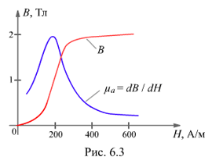

6.1.6.2. Кривые намагничивания
Зависимость магнитной индукции В от напряжённости Н магнитного поля, т. е. В = f(Н), нелинейная (рис. 6.3) и не имеет аналитического выражения.
Для оценки свойств ферромагнетиков строят кривые намагничивания
В = f(Н), приводимые в справочниках. С их помощью можно для каждого значения напряжённости поля Н определить значение магнитной проницаемости ma, которая при возрастании напряжённости поля сначала увеличивается, затем уменьшается.
В = f(Н), приводимые в справочниках. С их помощью можно для каждого значения напряжённости поля Н определить значение магнитной проницаемости ma, которая при возрастании напряжённости поля сначала увеличивается, затем уменьшается.